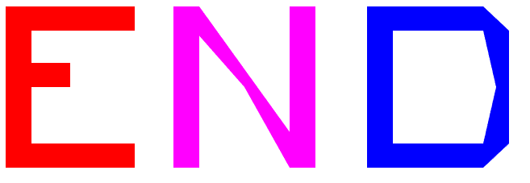
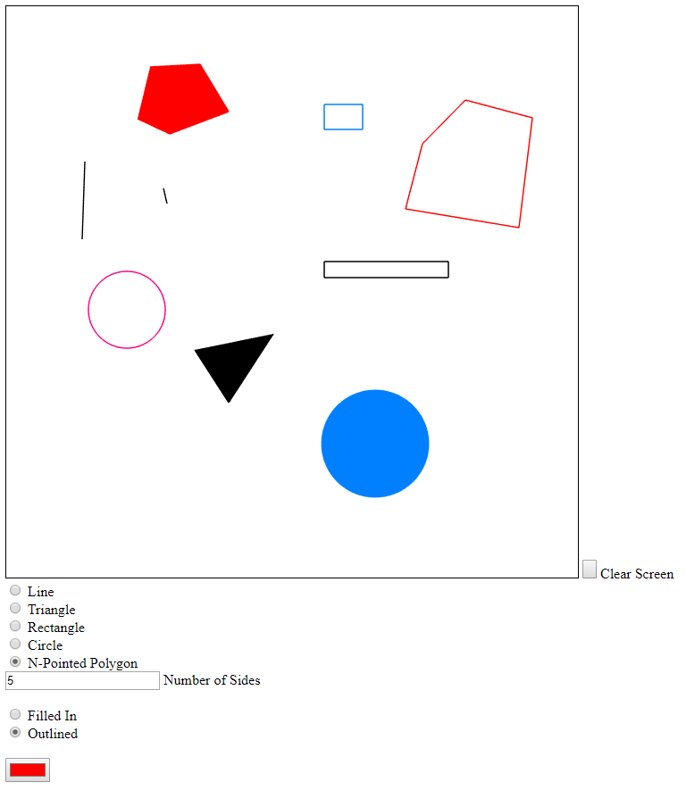
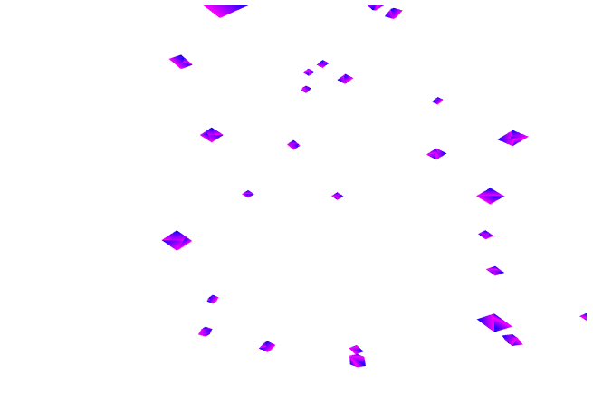

Class Projects
Programmer
This is a description of all of the projects I completed in my Computer Graphics course. At the end of each description, there will be a link to view the project on GitHub.
Our first project in the course was to use primitive shapes in Javascript to create our initials. Each letter had to be a different color and had to be easily read. This was our introduction to Javascript and it's use in Computer Graphics.
Named by the professor, the Painful Paint Program was creating an interactive program where the user clicked to create shapes on a canvas. There needed to be a menu to select different types of shapes, whether they were outlined or filled in, and what color the shape was.
This was our first attempt at 3D shapes in a space, where we had to create rotating shapes that you could navigated through using the arrow keys.
